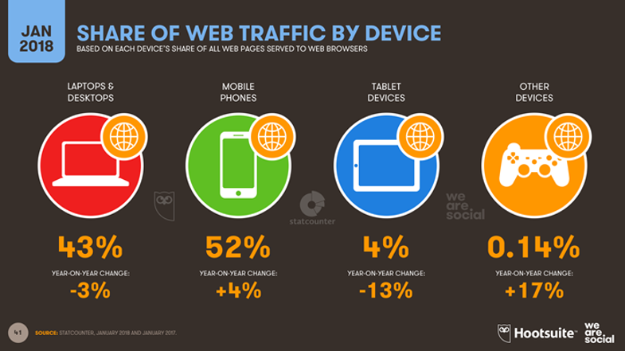

Nos tempos atuais, além dos desktops e notebooks, é possível acessar a internet através de smartphones, tablets, televisores e já existem até mesmo geladeiras que possuem internet para algumas finalidades, como buscar receitas ou ler as últimas notícias, por exemplo.
De acordo com a pesquisa realizada pela WMcCann, 41% dos entrevistados acessam a internet pelo celular e, dentre estes, 47% utilizam banda larga móvel (3G). Além disso, 44,4% das pessoas que ainda possuíam o celular convencional, disseram que pretendiam trocar de aparelho em 6 meses ou menos.
Fonte: PrinciWeb
